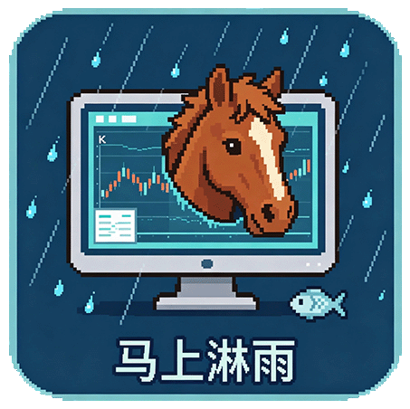
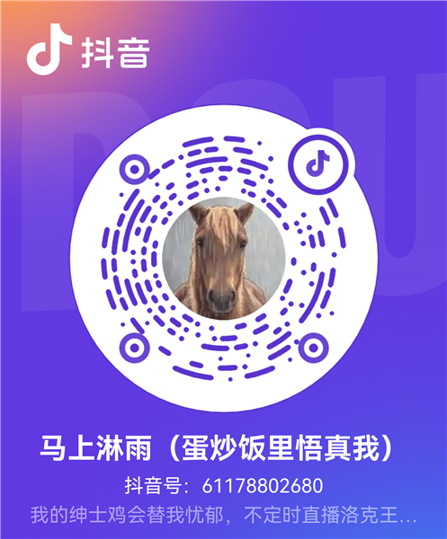
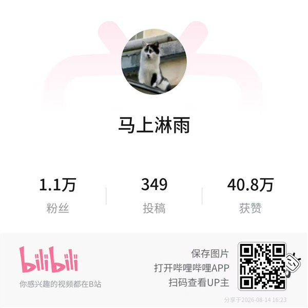
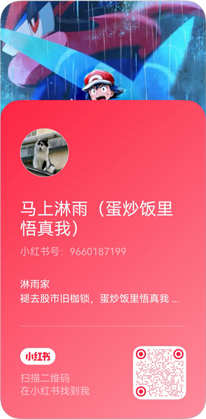

褪去股市旧枷锁，蛋炒饭里悟真我
工位悬浮行情小工具：置顶悬浮、低调查看自选行情与大盘指数，支持透明皮肤、碰触显示、锁定穿透等摸鱼模式。仅行情查看，不做投资建议。
绿色免安装单文件 · 约 9MB · 支持 Windows 10 / 11 · 作者：马上淋雨
为上班摸鱼场景设计的一整套低调查情方案

无边框小窗口始终置顶，不遮挡工作软件；自动记忆上次窗口位置和大小，下次打开无需重新调整，工位低调看行情。
支持添加最多 10 支自选股（自动识别沪深京代码），实时显示现价、涨跌额、涨跌幅、涨停价；点击任意一行可展开详情：今开、昨收、最高、最低、成交额、换手率、量比、PE/PB、主力净额、振幅。自选列表本地保存，重启不丢。
内置上证指数、深证成指、创业板指三大指数，与自选股同屏显示；不需要时点一下即可整栏隐藏，界面更精简。
一键切换：深色毛玻璃面板适合日常；透明皮肤只显示股票名字和涨跌，背景完全透明融入桌面，鼠标移上去才浮现功能栏，隐蔽性拉满。
开启后窗口平时完全隐藏，鼠标移到窗口位置才浮现，移开即消失，任务栏图标也随之消失；点托盘图标可一键唤回。
锁定后行情内容常驻桌面且鼠标完全穿透——下面的软件照常点击操作，内容只是"贴在屏幕上"；悬停只出现锁定标志，点击即可解锁。锁定状态下还能叠加碰触显示，随时隐身。
系统托盘小图标常驻：左键单击显示/隐藏窗口，右键菜单退出；顶栏"—"可最小化到任务栏。老板路过，一键隐身。
行情取自腾讯、东方财富公开接口，支持手动刷新与自动轮询（3s / 5s / 10s / 30s 四档可切换），涨跌闪烁提示，状态栏实时显示更新时间与连接状态。
绿色免安装单文件约 9MB，无广告、无后台残留；启动时展示免责声明；自定义软件图标与作者署名；开源项目结构清晰，可自行二次开发打包。
三步上手，摸鱼无忧
点击上方「下载 Windows v1.0」获取 上班盯盘助手.exe，绿色免安装，双击即用（Windows 10 / 11）。首次打开会弹出免责声明，点击「我已阅读并了解」进入主界面。
顶栏输入 6 位股票代码（如 002580，沪深京自动识别）后点 ＋ 添加，最多 10 支；鼠标悬停行尾 ✕ 可移除，自选列表本地保存。
列表实时显示现价、涨跌额、涨跌幅与涨停价；点击任意一行展开详情（今开/昨收/最高/最低/成交额/换手率/量比/PE·PB/主力净额/振幅）。指数栏显示上证、深证、创业板，点顶栏 ▾ 可隐藏/显示大盘。
底栏 🔄 手动刷新；「刷新 5s」点击切换自动轮询间隔（3s / 5s / 10s / 30s）。行情来自腾讯、东方财富公开接口，需要联网。
🎨 皮肤：深色 ⇄ 透明一键切换，透明皮肤只显示股票名字和涨跌，悬停才浮现功能栏。
👁️ 碰触显示：鼠标移入窗口区域才显示、移开即隐藏，点托盘图标可唤回。
🔒 锁定穿透（透明皮肤）：内容常驻、鼠标穿透，悬停点锁解锁，可与碰触显示叠加。
按住顶栏拖动，右下角手柄或拖拽边缘调整大小，位置大小自动记忆；「—」最小化到任务栏，✕ 关闭；托盘左键显示/隐藏、右键退出。各项设置本地保存，重启不丢。
软件永久免费，如果它帮你少挨了几次老板的凝视，欢迎投喂一条小鱼干~
微信
支付宝
扫码即投喂，谢谢老板的小鱼干 🎣
1.上班盯盘助手仅为行情信息查看辅助工具，软件本身不生成、不加工任何行情原始数据，所有行情数据均来源于第三方公开互联网接口。
2.本工具不构成任何投资建议、理财指导、交易决策参考，不提供选股、荐股、预测涨跌、操盘分析类功能。所有股票行情、价格信息仅供浏览参考。
3.行情数据来自第三方公开接口，因网络延迟、接口变更、停用或故障等原因，可能存在数据延迟、缺失、不准确等情况，本软件不保证数据的实时性、准确性与完整性。
4.股市有风险，投资需谨慎。用户一切证券交易行为及盈亏结果均由用户本人自行承担，本软件及作者不对使用者的任何投资损失承担任何法律与经济责任。
5.本软件仅供个人学习、非商业使用，请勿将本工具用于高频交易、机构商用等场景。禁止利用本工具从事违反证券相关法律法规的行为。
6.Windows 系统可能提示“未知发布者”：本项目为个人业余项目，暂无数字签名，软件不会窃取账户、交易密码等敏感信息，源代码可联系作者获取。
7.如因使用本软件产生任何直接或间接损失，均由使用者自行负责。如不接受本声明，请勿使用并立即删除本软件。
关注马上淋雨
鼠标悬停（手机点按）账号卡片，查看二维码
抖音

扫码关注抖音
哔哩哔哩

扫码关注哔哩哔哩
小红书

扫码关注小红书